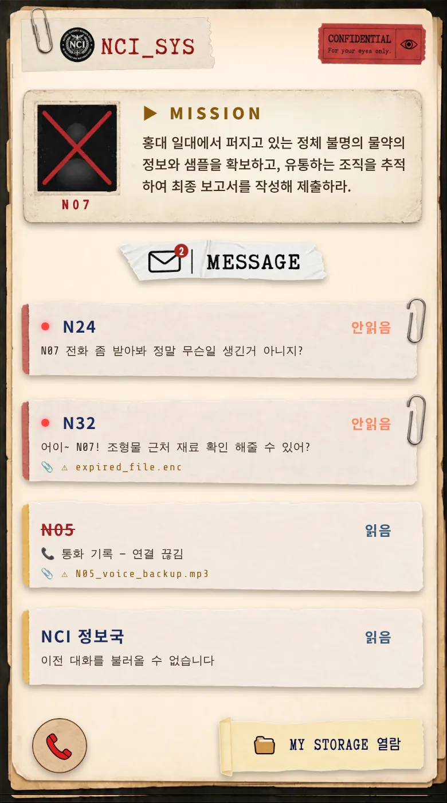

무엇이 궁금하세요?
질문을 누르면 답이 펼쳐져요.
약 2시간중간 휴식 가능
2~3km도보 이동
중학생+권장 연령
시작할 때
어디서 시작해요?
홍대입구역 3번 출구에서 게임에 접속하세요. 로딩 후 [수사 시작] → 오프닝은 탭해서 넘겨요.
첫 화면에서 뭘 눌러요?
아래쪽 [MY STORAGE 열람]이요. 문제(파일)는 전부 여기 안에 있어요.

!
어떤 문제부터 풀어요?
FILE_01부터요. 처음엔 FILE_01만 열려 있고, 파일은 순서대로만 열려요.

!
푸는 중에
문제는 어떻게 풀어요?
열린 파일의 노란 형광펜이 핵심 단서예요. 그 장소에 가서 답을 찾으면, 그 답이 다음 파일의 잠금 코드예요.

!
지도는 어디 있어요?
파일 화면 오른쪽 아래 💡 → 힌트 창 오른쪽 위 지도 아이콘이에요. 지도는 여기에만 있어요. (FILE_01은 지도 없이 출발 장소 근처예요)

!
힌트 버튼이 안 보여요
💡는 파일을 열었을 때만 보여요. 프로필 화면이나 MY STORAGE에는 없어요. 힌트를 끝까지 열면 정답과 해설도 볼 수 있어요.
코드가 안 맞아요
- AB-처럼 이미 적힌 부분은 빼고 입력했나요?
- 칸 수와 글자 수가 같은지 확인해 주세요.
- 영어는 대소문자 상관없어요.

!
“이전 파일을 먼저 해제하세요”가 떠요
파일은 순서대로만 열려요. 마지막으로 연 파일의 바로 다음 파일을 눌러 주세요.
메시지로 답을 보내라고 해요
프로필 화면 → 해당 메시지 → 맨 아래 입력창에 답을 적고 [전송]을 눌러요.

!
카메라는 어디 있어요?
MY STORAGE 왼쪽 아래 빨간 카메라 버튼이에요. 새 창에서 카메라 권한을 ‘허용’해 주세요.
주의사항
하면 안 되는 게 있나요?
- 새로고침·창 닫기 금지 — 진행 상황이 사라질 수 있어요.
- 뒤로 갈 땐 게임 화면 왼쪽 위 ←를 사용하세요.
- 걸을 땐 앞을 보고, 확인은 멈춰서 해주세요.
- 시설물은 만지거나 떼지 말아 주세요.
뭘 챙겨가야 해요?
충전된 휴대폰과 보조배터리, 모바일 데이터, 이어폰(음성 기록용), 편한 신발이요.